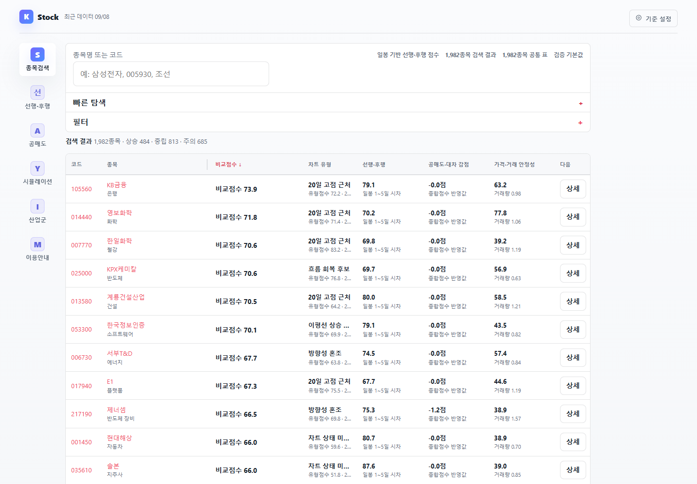

종목별 캔들 차트와 거래량, 이동평균선, 외국인 매수 평균가를 한 화면에서 비교하는 읽기 전용 주식 탐색 서비스입니다. 종목 검색과 산업군 비교에서 상세 차트로 이어집니다.
K Stock
개요
해결할 문제
가격 차트와 거래 지표가 떨어져 있으면 같은 날짜의 흐름을 비교하기 어렵습니다. 차트를 크게 두고 종목 정보와 비교 지표를 옆에서 확인하도록 구성했습니다.
구현 과정
종목을 찾은 뒤 기간과 표시 지표를 바꾸며 차트를 살펴보는 흐름을 구현했습니다.
- 종목명·코드 검색과 비교 점수 정렬로 종목 탐색
- 상세 페이지에서 캔들·거래량과 60일·120일 구간 확인
- 이동평균선·박스 범위 표시 전환과 차트 그리기 도구 제공
- 종목 정보 패널에서 산업군 수익률·공매도·대차 지표 비교
화면·동작

